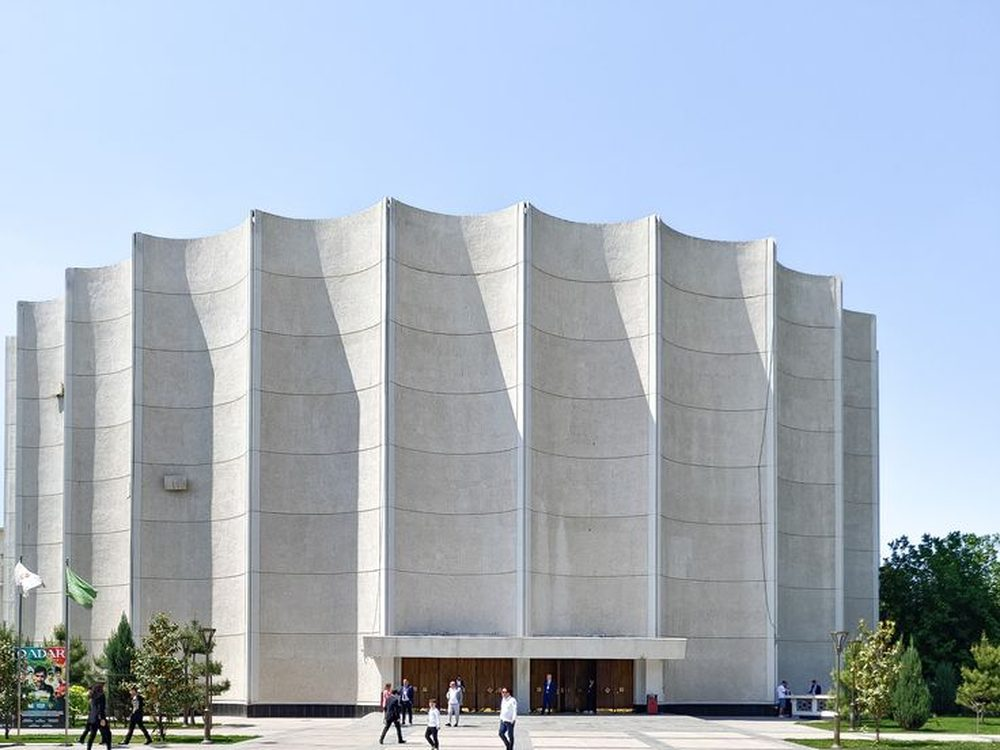
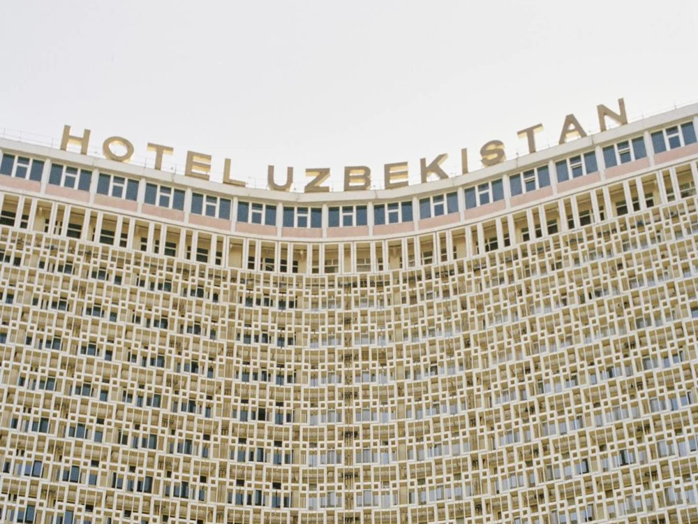
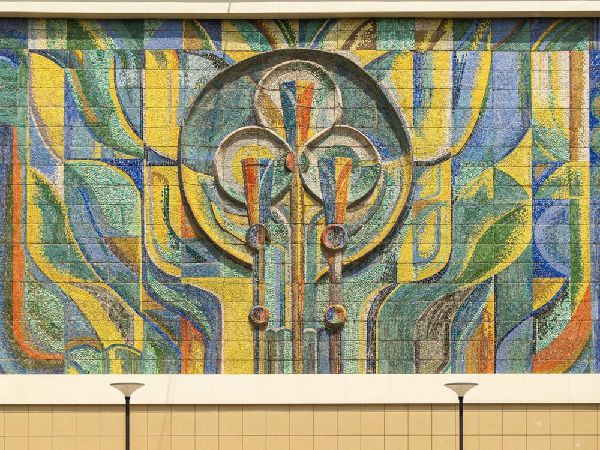
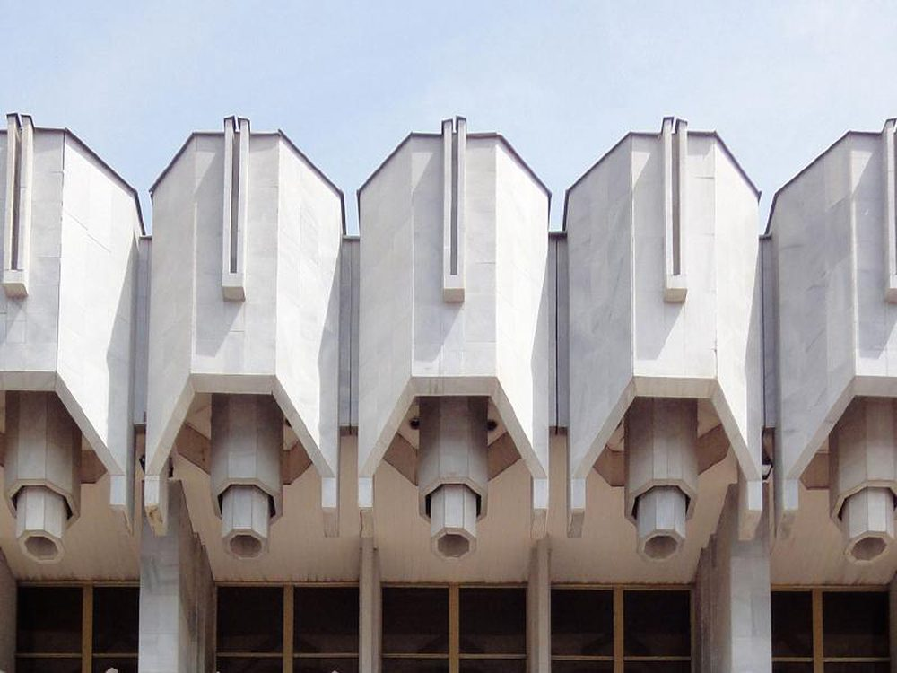

[ CAPITAL · JUN 9–12, 15 ] [ СТОЛИЦА · 9–12, 15 ИЮН ]
TASHKENT. ТАШКЕНТ.
three million people. soviet modernism at full blast. plov from a cauldron the size of you. the wonders (and the weight gain) start and end here :) три миллиона человек. советский модернизм на полную. плов из казана размером с тебя. чудеса (и набор веса) начинаются и заканчиваются здесь :)
JUN 99.06 · TUE · ARRIVALS· ВТ · ПРИЛЁТ
first day. nothing happened yet. you are tired, jet-lagged, hungry. hang in there. первый день. ещё ничего не было. ты уставший, под джетлагом, голодный. держись.
grab a SIM at the airport, check in at DoubleTree, rest.возьми SIM в аэропорту, заселись в DoubleTree, передохни.
→ taxi from the hotel · DoubleTree → centre ≈ 20–30 min (Yandex Go)→ такси из отеля · DoubleTree → центр ≈ 20–30 мин (Yandex Go)
Hast-Imam Complexкомплекс хаст-имам
for whoever's already in town by 5. quran of uthman, 7th century. heat backs off, golden hour kicks in.для тех, кто уже в городе к пяти. коран османа, vii век. жара уже отпустит, можем погулять.
→ taxi straight to the dinner area — don't loop back to the hotel→ такси сразу в район ужина — не возвращаемся в отель
welcome dinnerприветственный ужин
Sharshara — by the river, a waterfall inside. uzbek food. (you will not leave hungry. that's not a thing here.)sharshara — построен у реки, внутри водопад. узбекская кухня. (голодным ты не уйдёшь. тут так не бывает.)
JUN 1010.06 · WED · FIRST FULL DAY· СР · ПЕРВЫЙ ПОЛНЫЙ ДЕНЬ
landed at 3am? you can sleep. (we'll send you selfies with the samsa :)) прилетел в 3 ночи? можешь проспать утро. (скинем тебе селфи с самсой :))
sleep in — you flew through the night. up early? join the Chorsu run. otherwise catch the group at lunch.отсыпайся — ты летел всю ночь. проснулся бодрым? присоединяйся к выезду на Чорсу. иначе догоняй группу на обеде.
→ DoubleTree → Chorsu ≈ 25 min (Yandex Go)→ DoubleTree → Чорсу ≈ 25 мин (Yandex Go)
breakfast at Chorsu marketзавтрак на рынке чорсу
breakfast (the armenian men will pick samsa for every one, hihi). then clothes & gold market — wander, take in the area.завтрак (армянские мужчины выберут нам самсу хихи). потом рынок одежды и золота гуляем, смотрим окрестности.
→ taxi to lunch→ такси на обед
lunch · Korean restaurantобед в корейском ресторане
Chenson — kuksi and Korean-style carrot from the Koryo-saram, Central Asia's own Koreans. a cuisine you won't find in Korea itself.chenson — кукси и морковка по-корейски от корё-сарам, тех самых среднеазиатских корейцев. кухня, которой нет в самой корее.
peak heat — indoor options: the cinema, the circus. evening is your call, everyone does their own thing.пик жары — опции в помещении: кинотеатр, цирк. вечером каждый смотрит что хочет.
↓ ideas in the free-time menu↓ идеи в меню свободного времениJUN 1111.06 · THU · ✦ BIRTHDAY· ЧТ · ✦ ДР
if you landed last night — sleeping through yoga is allowed. the rest of the day — all together. если прилетел ночью — можно проспать йогу. всё остальное — вместе.
i turn 30 in front of everyone. don't miss it. мне исполняется 30 на глазах у всех. не пропусти.
Yoga + breakfastйога и завтрак
maybe there's yoga, maybe not. either way, grab coffee at the hotel before we leave for the workshop.может быть, будет йога... в любом случае, стоит выпить кофе в отеле до выезда на мастер-класс.
→ taxi to the cooking workshop→ такси на кулинарный мастер-класс
Cooking workshop + lunchкулинарный мастер-класс + обед
chaikhana plov at the Plov Museum. we cook together, we eat what we cook. (~3 hours.)чайханский плов в Музее Плова. готовим вместе, едим то, что приготовили. (~3 часа.)
→ taxi to Sette (Hyatt) ≈ 25 min from DoubleTree→ такси в Sette (Hyatt) ≈ 25 мин из DoubleTree
Birthday dinner — Sette rooftopпраздничный ужин — Sette руфтоп
yes, we came to Uzbekistan for Italian food. (no, we will not be explaining ourselves.)да, мы приехали в Узбекистан ради итальянской кухни. (нет, объясняться мы не будем.)
JUN 1212.06 · FRI · TRANSIT MORNING· ПТ · УТРОМ В ДОРОГУ
morning starts here. by lunch you're in samarkand. утро начинается здесь. к обеду уже— в самарканде.
wake up. yes, really.подъём. да, серьёзно.
taxi from doubletree to Tashkent Pass. Tsentralny station. ≈ 25 min, account for morning traffic.такси из doubletree на вокзал ташкент пасс. центральный. ≈ 25 мин, закладывай утренний трафик.
AT THE STATION.УЖЕ НА ВОКЗАЛЕ.
important — registration closes 30 min before departure. don't be late.важно — регистрация закрывается за 30 мин до отправления. не опаздывай.
train Afrosiyob 770 — Tashkent → Samarkand, 2h 19m.поезд афросиёб 770 — ташкент → самарканд, 2ч 19м.
today a few of us fly home. (we'll miss them. they'll miss the samsa.) сегодня несколько человек улетают. (мы будем скучать по ним. они — по самсе.)
JUN 1515.06 · MON · YOU'RE BACK · DINNER· ПН · ТЫ ВЕРНУЛСЯ · УЖИН
train arrives at Tashkent Pass. Tsentralny.поезд приходит на ташкент пасс. центральный.
taxi to DoubleTree, drop bags in the room. shower if you can.такси в doubletree, бросаешь вещи в номер. душ если успеваешь.
farewell dinner — inside doubletree or walking distance.прощальный ужин — внутри doubletree или в пешей доступности.
tomorrow everyone leaves on their own flight. (time to cry is... NOW.) завтра все улетают своими рейсами. (ПЛАКАТЬ УЖЕ МОЖНО...)
WHAT TO DO IN YOUR FREE TIME ЧЕМ ЗАНЯТЬСЯ В СВОБОДНОЕ ВРЕМЯ
for the hours between group things. pick by mood. для часов между общими активностями. выбирай по настроению.
nothing matches those filters. .ничего не подходит под фильтры. .

Hast-Imam Complex — quran of uthman, 7th century. one of the oldest in the world. mosques, madrasas, mausoleums.комплекс хаст-имам — коран османа, vii век. один из старейших в мире. мечети, медресе, мавзолеи.

Chorsu bazaar — giant covered market under a blue dome. samsa, lepyoshka, cherries.базар чорсу — гигантский крытый рынок под голубым куполом. самса, лепёшки, черешня.

Alisher Navoi Cinema — (modernism) the only uzbek building in chaubin's CCCP book. still a working cinema.кинотеатр алишер навои — (модернизм) единственное узбекское здание в книге шобена CCCP. действующий кинотеатр.

Tashkent metro — (modernism) palace-stations: Kosmonavtlar, Alisher Navoi, Mustaqillik. +20°C when it's +40 outside.метро ташкента — (модернизм) станции-дворцы: космонавтлар, алишер навоий, мустакиллик. +20°C в жару +40°C.

Hotel Uzbekistan (1974) — (modernism) panjara lattice at skyscraper scale. classic southern brutalism — they let you into the lobby.отель узбекистан (1974) — (модернизм) решётка панджара в масштабе небоскрёба. классика южного брутализма. в лобби пустят.

Tashkent Circus (1975) — (modernism) geometry outside; stained glass, mosaic, carving inside. check for a june show.цирк (1975) — (модернизм) снаружи геометрия, внутри витражи, мозаика, резьба. проверить шоу в июне.

Union of Artists hall — (modernism) eastern arch, turquoise tiles, two-tone hall. next to Hotel Uzbekistan.союз художников — (модернизм) восточная арка, бирюзовые изразцы, двухтонный зал. рядом с отелем узбекистан.
Minor Mosque — white marble on the Anhor canal. best light at sunset.мечеть минор — белый мрамор на берегу канала анхор. на закате — лучший свет.
Old Town walk — narrow lanes, grape vines, clay walls. not a touristy rhythm.старый город — узкие переулки, виноградные лозы, глинобитные стены. не туристический ритм.
the area around the Hast-Imam complex & Chorsu bazaarрайон вокруг комплекса Хаст-Имам и базара Чорсу

Shota Rustaveli mosaics — (modernism) fantastical mosaics on the facades of residential blocks.мозаики на шота руставели — (модернизм) фантастические мозаики на фасадах жилых домов.

Palace of People's Friendship — (modernism) modernism + uzbek ornament at maximum scale. from outside.дворец дружбы народов — (модернизм) модернизм + узбекский орнамент в максимальном масштабе. снаружи.
Besh Qozon — giant cauldrons, horse meat (kazy), ~$3.Besh Qozon — гигантские казаны, конина (казы), ~$3.
Nurafshon Osh Markazi — locals' favourite. Old Town. go before 13:00.Nurafshon Osh Markazi — лучший по мнению местных. старый город. идти до 13:00.
Minor Somsa №1 — from 7am, minced meat from the tandoor. fresh batch 11–12.Minor Somsa №1 — с 7 утра, рубленое мясо из тандыра. свежая партия 11–12.
MANDU MANTI — best in Tashkent (uyghur school). wooden steamers, cream sauce.MANDU MANTI — лучшие в ташкенте (уйгурская школа). деревянные пароварки, крем-соус.
Karasaray Lagman — across from Hast-Imam, drop in after the walk. signature adjika.Карасарай Лагман — напротив хаст-имам, зайти после прогулки. фирменная аджика.
Chorsu bazaar — straight off the grill at the market.Чорсу базар — прямо на базаре.
rooftop panorama, Private Dining Room with a fireplace (InterCont, 17–22 fl).руфтоп-панорама, private dining room с камином (InterCont, 17–22 эт).
wood-fired pizza, complimentary cake for birthdays (Hyatt, 7 fl). ✦ the birthday dinner.пицца из дровяной печи, торт для именинников (Hyatt, 7 эт). ✦ ужин на ДР.
live music, a mood of its own.live music, особая атмосфера.
good terrace, crispy eggplant.хорошая терраса, crispy eggplant.
in + outdoor, live music.in+outdoor, живая музыка.
char-grilled, terrace, private rooms.char-grilled, терраса, отдельные комнаты.
classic courtyard with ayvans, open tandoor, plov in the cauldron.классический дворик с айванами, тандыр на виду, плов в казане.
loud and folksy, caravanserai decor, rugs, giant cauldrons.народный, шумный, караван-сарайный декор, ковры, гигантские казаны.
rooftop, a view. check group capacity.руфтоп, вид. уточнить вместимость для группы.
built by the river, a waterfall inside. (the welcome dinner.)построен у реки, внутри водопад. (приветственный ужин.)
revolving, 360° panorama. food is average — go for the view.вращающийся, панорама 360°. еда средняя — идти за видом.
best georgian in the city.лучший грузинский в городе.
spices (cumin, turmeric, barberry), dried fruit, non, nuts. cash.специи (зира, куркума, барбарис), сухофрукты, нон, орехи. наличные.
ceramics, miniatures, teapots, scarves.керамика, миниатюры, чайники, платки.
mass-market + local clothing brands.масс-маркет + местные бренды одежды.
JUN 12 · SAMARKAND 12.06 · САМАРКАНД
the registan. turquoise domes. the bread that locals fly home in hand luggage. регистан. бирюзовые купола. лепёшка, которую местные везут самолётами в ручной клади.